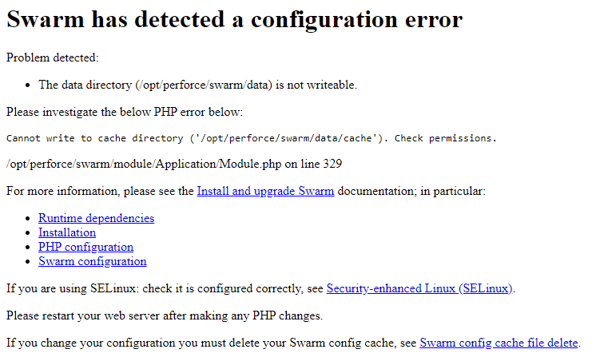

Runtime dependencies
In order to successfully install, configure, and deploy Swarm, the following dependencies are required:
- A recommended operating system, see Recommended operating systems
- An Apache server with the modules required by Swarm installed, see Apache web server
-
A supported version of PHP with the modules required by Swarm installed, see PHP.
-
A supported Helix Core server deployment, and the ability to connect to it from the system hosting Swarm, see Helix Core server requirements
Note"Helix Core server deployment" can refer to a running
p4dor a proxy, replica, edge server, or commit server. - Helix server Extensions or Triggers to notify Swarm about Helix server events, see Helix Core server event notification.
- curl or
wgetfor Swarm worker operation, see Worker dependencies - If Security-enhanced Linux (SELinux) is installed it must be configured correctly, see Security-enhanced Linux (SELinux)
Optional dependencies:
- LibreOffice: required to view office-type documents. For more information, see LibreOffice.
- zip: command-line archiving tool: Required to download zip archives of files and folders. For more information, see Zip.
- Helix Authentication Service SSO: enables Swarm to authenticate with SSO when the Helix Core server is configured for Helix Authentication Service, see Helix Authentication Service SSO.
- Sendmail or equivalent: required to use Swarm email notifications. For more information, see Swarm email notifications.
Recommended operating systems
Perforce recommend that Swarm is installed on one of the following operating systems:
- Ubuntu 18.04 LTS and 20.04 LTS latest stable release should be used.
- CentOS 7 latest point release with PHP libraries installed from the Remi repository, see PHP. At the time of this Swarm release, the latest CentOS point release is 7.9.
- RHEL 7 and 8 latest stable release with PHP libraries installed from the Remi repository, see PHP. At the time of this Swarm release, the latest stable RHEL releases are 7.9 and 8.5.
- Amazon Linux 2: latest stable release with PHP libraries installed from Amazon Linux Extras, see PHP.
You cannot install Swarm on a Windows machine.
Other Linux distributions
Swarm has not be tested on Linux distributions that are not on our recommended list. Because of this, our Support team may not be able to help you to the same extent as they would for the recommended operating systems.
Swarm will probably run on any Linux distribution based on RHEL 7 or 8. Swarm includes binary versions of P4PHP, the Perforce extension for PHP. This P4PHP dependency typically sets the limit to what Linux distributions you can install Swarm on.
You might be able to get Swarm running on another platform if you build P4PHP yourself and satisfy the other runtime dependencies. Instructions on how to obtain and build P4PHP from source can be found in the P4PHP Release notes.
P4PHP does not support threaded operation. If you compile P4PHP from source, ensure that the version of PHP you compile for is non-threaded.
Apache web server
Swarm requires Apache HTTP Server 2.4 or newer:
ImportantCentOS/RHEL only:
CentOS/RHEL 7: Use the Remi repository configuration package (remi-release-7.rpm) to give Swarm access to PHP 7.x. Use the epel-release-latest-7.noarch.rpm repository configuration package to give Swarm access to EPEL packages.
RHEL 8: Use the Remi repository configuration package (remi-release-8.rpm) to give Swarm access to PHP 7.x. Use the epel-release-latest-8.noarch.rpm repository configuration package to give Swarm access to EPEL packages.
Swarm 2019.1 to 2020.1: these versions of Swarm used PHP packages from the SCL repositories for CentOS/RHEL 7. This was to provide access to more recent versions of PHP than are available as standard on CentOS/RHEL. This required the use of the httpd24-httpd package for Apache. These were all installed into /opt/rh
Swarm 2020.2 and later: these versions of Swarm uses the Remi repository for CentOS/RHEL 7 and RHEL 8. This provides PHP 7.4 installed in the standard file system structure. This means that the old httpd24-httpd version of Apache is no longer needed, and the standard system version of Apache is being used again.
The SCL Apache site configuration file was installed at this location for Swarm 2019.1 to 2020.1:
/opt/rh/httpd24/root/etc/httpd/conf.d/perforce-swarm-site.conf
If this exists when Swarm is upgraded to 2020.2 and later, this file is copied to /etc/httpd/conf.d/perforce-swarm-site.conf if there is no file at the destination. It is also re-written to change references from /var/log/httpd24 to /var/log/httpd
If a site configuration file for Swarm already exists in /etc/httpd, the copy and re-write is not performed.
After upgrade, httpd24-httpd is disabled.
To avoid seeing the Apache HTTP server Linux test page when you start the Apache server, comment out the content of the welcome.conf file located in the /etc/httpd/conf.d/ directory.
To avoid loading the Apache HTTP server example configuration instead of the Swarm configuration when the Apache server starts, rename the autoindex.conf file located in the /etc/httpd/conf.d/ directory to z-autoindex.conf or similar. This is required because Apache runs the first conf file it finds in the /etc/httpd/conf.d/ directory (alphabetical order) and that must be the perforce-swarm-site.conf file.
Swarm also requires the following Apache modules:
- Ubuntu: mod_phpx for interacting with PHP (usually installed with PHP)
- CentOS/RHEL: php-fpm for interacting with PHP (usually installed with PHP)
-
mod_rewrite URL rewriting engine
Where x is the version of PHP you are running, for example 7. For supported versions of PHP, see PHP.
Only the prefork MPM Multi-Processing Module, a component of the Apache web server that is responsible for binding to network ports, accepting requests, and dispatch operations to handle the request. is supported. Use of the worker or event MPMs is not supported and is likely to cause problems because P4PHP does not support threaded operation.
Multi-Processing Module, a component of the Apache web server that is responsible for binding to network ports, accepting requests, and dispatch operations to handle the request. is supported. Use of the worker or event MPMs is not supported and is likely to cause problems because P4PHP does not support threaded operation.
For more information on the prefork MPM, see: https://httpd.apache.org/docs/2.4/mod/prefork.html
PHP
Swarm requires PHP 7.2 or 7.4:
Important
- PHP must be non-threaded because P4PHP does not support threaded operation.
CentOS/RHEL 7: Use the Remi repository configuration package (remi-release-7.rpm) to give Swarm access to PHP 7.x. Use the epel-release-latest-7.noarch.rpm repository configuration package to give Swarm access to EPEL packages.
RHEL 8: Use the Remi repository configuration package (remi-release-8.rpm) to give Swarm access to PHP 7.x. Use the epel-release-latest-8.noarch.rpm repository configuration package to give Swarm access to EPEL packages.
Required PHP extensions
Swarm requires the following PHP extensions:
If you install Swarm from a package, all of these PHP extensions are automatically pulled in as dependencies on all platforms.
-
iconv (character encoding converter)
https://secure.php.net/iconvThis is typically enabled by default with most PHP distributions
-
JSON (JavaScript Object Notation)
https://secure.php.net/jsonThis is typically enabled by default with most PHP distributions, although recent distributions are making this optional.
-
Session (session handling)
This is typically enabled by default with most PHP distributions
-
P4PHP version 2019.1 or later (the Perforce PHP Extension)
The latest P4PHP version is included with the Swarm package, OVA and tarball installations.
NoteSwarm package, OVA and tarball installations: 2 versions of P4PHP are supplied for each PHP 7 version supported by Swarm. They are located in the p4-bin/bin.linux26x86_64 directory.
- perforce-php7x.so compatible with systems using SSL 1.0.2
- perforce-php7x-ssl1.1.1.so compatible with systems using SSL 1.1.1 (by default Ubuntu 18.04 and Ubuntu 20.04 use SSL 1.1.1)
Where x is the version of PHP 7.
If the perforce.ini file is not pointing at the correct version of P4PHP and you connect to an SSL enabled Helix server:
- The Swarm web-page will not load and you might see a Connection Reset error.
- There might be an undefined symbol: SSLeay message in the Apache error log
Upgrading Swarm:
- Swarm package or OVA: the latest P4PHP version is installed automatically.
- Swarm tarball installation: you must configure Swarm to use the version of P4PHP in the new Swarm tarball. For swarm tarball upgrade instructions, see Upgrading a tarball installation.
-
php-xml (DOM API for XML manipulation, the Swarm RSS feed will not work if it is not installed)
-
php-mbstring (multi-byte character strings, the Swarm RSS feed will not work if it is not installed)
-
php-redis (PHP extension for Redis, the Swarm cache will not work if it is not installed)
Recommended PHP extension
Swarm greatly benefits from the following PHP extension:
- Imagick (integrates ImageMagick into PHP) https://secure.php.net/imagick
Installation instructions for Imagick.
Building PHP from source (not recommended)
If you build PHP from source, the following dependencies are required:
- openssl
- mcrypt
- zlib
- gettext
- curl
- apxs (Apache extension tool)
See the source PHP documentation for details on how to include these modules in your PHP build. There is normally a --with-xxxx option that defines where the dependency is loaded from.
For example for apxs, zlib, and openssl:
./configure --with-apxs2=<path_to_apxs> --with-zlib=<path_to_zlib_library> --with-openssl
Helix Core server requirements
Swarm works with any supported version of the Helix server (Standard Maintenance). The versions supported in this release of Swarm are:
- 2020.1
- 2020.2
- 2021.1
- 2021.2
Helix server 2020.1 and later, permissions have changed for viewing and editing stream spec files in Swarm. To view and edit stream spec files in Swarm, the Swarm user must have admin permissions for the entire depot //...
Helix server 2020.2 and later: any new file being shelved that has the same content as an existing shelved file refers to the existing archive file instead of creating a duplicate archive file. No Helix server or Swarm configuration is required for this feature.
This Helix server feature automatically reduces the space required for the Swarm-managed shelved review changelists. Swarm creates these changelists for its own internal use. Helix server only updates new shelves, it does not retrospectively update your existing shelves.
For more information on the Swarm-managed changelists, see
Download Helix server from here: https://www.perforce.com/downloads/helix-core-p4d
-
Swarm does not support Helix servers configured to use P4AUTH, see Centralized authentication server (P4AUTH) in the Helix Core Server Administrator Guide.
-
Swarm does not support the Helix MFA Authenticator.
Helix server automated user requirements for Swarm
Swarm requires an automated user with at least admin privileges in the Helix Core server to enable Swarm to run against the Helix server. This can be an existing user, or a new user created specifically to support Swarm.
If Helix Authentication Service is configured for your Helix server, the user account running Swarm must not use the Helix Authentication Service.
For more information about setting up Helix Core server, see Installing and upgrading the server in Helix Core Server Administrator Guide.
Swarm and Helix server installation considerations
Before installing Swarm and Helix server you should consider the following:
-
To ensure that all characters, including Unicode characters, are displayed and handled correctly by Swarm, configure your Helix server in Unicode mode. For information on configuring your Helix server in Unicode mode, see Setting up and managing Unicode installations in the Helix Core Server Administrator Guide.
-
For a small system, you can run Swarm and Helix server on the same machine.
-
For larger systems, we recommend that Swarm and Helix server are run on separate machines. The machines should be close to each other to maximize network performance.
-
The Swarm and Helix server machines do not need to have the same operating system. For example, Helix server could be on a Windows server and Swarm could be on a CentOS server.
Swarm needs to know about a number of Helix server events to operate correctly. To enable this to happen, Helix server Extensions (recommended) or Helix server Triggers are installed on the Helix server machine and they need to talk to Swarm. In either case, performance can be negatively affected if network lag between Swarm and the Helix server is high.
You cannot install Swarm on a Windows machine.
Helix Core server event notification
Swarm needs to know about a number of Helix server events to operate correctly, this can be done by using Helix server Extensions (recommended) or Helix server Triggers. Swarm installs include the Swarm Helix server extension file and trigger scripts required for Swarm to get the events it needs from your Helix server.
Triggers are still supported, but we recommend you use Helix server Extensions. Helix server Extensions are easier to install and maintain than Triggers.
Use one of the following:
-
Recommended: Helix server Extensions, see Helix Core server Extensions dependencies
-
Helix server Triggers, see Trigger dependencies
Helix Core server Extensions dependencies
If you are using the Swarm Helix server extension, Swarm Helix server Triggers must not be installed.
Helix server Extensions must be installed on your Helix server to complete your Swarm installation. The Swarm Extensions script is included with the Swarm product download and is copied to your Helix server during configuration.
To install the Swarm Helix server extension you need:
A compatible version of Helix server for Helix server Extensions:
-
Linux: Helix server 2019.2 and later. If you are using an earlier version of Helix server, you must use triggers.
-
Windows: Helix server 2021.2 and later. If you are using an earlier version of Helix server, you must use triggers.
Trigger dependencies
If you are using Swarm Helix server Triggers, the Swarm Helix server extension must not be installed.
We recommend you use Helix server Extensions, Helix server Extensions are easier to install and maintain than triggers. See Helix Core server Extensions dependencies.
Swarm triggers must be installed on the Helix server to complete the Swarm installation.
The Swarm triggers require perl 5.08+:
https://www.perl.org/get.html
On the Windows platform, we have tested Swarm against Strawberry Perl. There are two Perl modules that are also required which may not be part of a minimal Perl installation.
-
HTTP::Tiny is required to make calls to the Swarm server. If this is not present, then the trigger will attempt to use the command line curl program. This module is standard on Strawberry Perl on Windows, and available as a package with the version of Perl provided on CentOS 7, Ubuntu 18.04, and Ubuntu 20.04.
IO::Socket::SSL is required if the Swarm server is configured to use SSL and HTTP::Tiny is present. This is provided as standard by Strawberry Perl, and available on Linux.
If the HTTP::Tiny module is not available the triggers require the use of curl. This must be installed for the triggers to function. On CentOS, for example, this can be done using the yum package installer using yum install curl.
Swarm triggers also require the following perl modules to be installed:
- Windows:
- JSON is required to exchange data between the browser and the server and is included by default with Strawberry Perl.
- Ubuntu:
- JSON is required to exchange data between the browser and the server and must be installed.
- libjson-perl is required to manipulate JSON formatted data and must be installed.
- CentOS/RHEL:
- JSON is required to exchange data between the browser and the server and must be installed.
- perl-JSON is required to manipulate JSON formatted data and must be installed.
Swarm package installation on the same machine as P4D
If Swarm is installed from a package on the same machine as P4D, the triggers require the following perl modules to be installed:
- Ubuntu:
- Perl 5.08+
- libio-socket-ssl-perl is required if the Swarm server is configured to use SSL.
- libjson-perl is required to manipulate JSON formatted data and must be installed.
- CentOS/RHEL:
- Perl 5.08+
- perl-IO-Socket-SSL is required if the Swarm server is configured to use SSL.
- perl-JSON is required to manipulate JSON formatted data and must be installed.
Worker dependencies
Swarm uses short-lived workers to process the Swarm queue, new workers are regularly spawned by a recurring task.
One of the following must be installed to ensure new workers are regularly spawned:
- curl, download from: https://curl.haxx.se/download.html
- wget, download from: https://ftp.gnu.org/gnu/wget/
For more information about Swarm workers, see Set up a recurring task to spawn workers.
Redis server
Swarm requires Redis to manage its caches. Swarm caches data from the Helix server to improve the performance of common searches in Swarm and to reduce the load on the Helix server.
Redis is included with the Swarm package, OVA, and Tarball installations:
- Swarm package or OVA: Redis is automatically installed on the Swarm machine and Swarm is automatically configured to use Redis.
- Swarm Tarball installation: see the Redis installation and configuration section for instructions about installing Redis.
When Swarm starts it verifies the Redis cache, during this time you cannot log in to Swarm. The time taken to verify the Redis cache depends on the number of users, groups, and projects Swarm has. Start-up time can be improved by persisting the memory cache. You can persist the memory cache by disabling background saves and enabling append saves in the redis-server.conf file, see Redis server configuration file.
Optional:
If you prefer to use your own Redis server, you must edit the Redis server connection configurable in Swarm. For information on setting your Redis server connection, see Use your own Redis server.
Supported web browsers
The following browsers are supported for use with Swarm:
- Apple Safari, latest stable version
- Google Chrome, latest stable version
- Mozilla Firefox, latest stable version
- Microsoft Edge, latest stable version
Other web browsers might also work, including prior, development or beta builds of the above web browsers, but are not officially supported.
- JavaScript and cookies must be enabled in the web browser for Swarm to operate.
- Mobile web browsers are not supported by Swarm.
Workflow prerequisites
For Swarm 2019.2 and later, the workflow feature is enabled by default.
If you are upgrading from an earlier version you will need to update your triggers, see Upgrading Swarm.
The workflow feature requires:
-
Workflow must be enabled, see the workflow system configurable.
-
Your swarm-trigger.conf file must be configured correctly, see Using triggers to push events to Swarm.
-
Your Helix server trigger table must contain the workflow trigger lines, see Using triggers to push events to Swarm.
Optional dependencies
LibreOffice
Swarm can display previews of office-type documents when LibreOffice is installed on the Swarm server. Installation is not required, but when LibreOffice is installed Swarm automatically detects its presence.
For more information about LibreOffice, see LibreOffice.
Zip
You can download a ZIP archive of files/folders when the zip command-line tool is installed on the Swarm server.
For more information about installing and configuring Zip, see Zip archive.
Helix Authentication Service SSO
Swarm support for SSO using Helix Authentication Service with Helix server requires Helix server 2019.1 or later
For more information about configuring Swarm to authenticate with Helix Authentication Service, see Single Sign-On PHP configuration.
Swarm email notifications
Sendmail or an equivalent is required to use Swarm email notifications. By default, the configuration in php.ini relies on SendMail being installed. For more information about configuring email for Swarm, see Email configuration.
Security-enhanced Linux (SELinux)
Swarm supports SELinux on CentOS/RHEL and Amazon Linux 2. SELinux is an advanced access control mechanism that improves security for Linux distributions.
SELinux operates in one of three modes:
- enforcing: this mode blocks and logs any actions that do not match the defined security policy.
- permissive: this mode logs actions that do not match the defined security policy but these actions are not blocked.
- disabled: in this mode SELinux is off, actions are not blocked and are not logged.
To check the mode SELinux is operating in, view the /etc/selinux/config file with vi or a similar editor:
root $ vi /etc/selinux/config
For instructions on configuring SELinux:
-
CentOS/RHEL: See SELinux configuration.
-
Amazon Linux 2: See SELinux configuration.
If you see a Swarm configuration error similar to the error shown below, SELinux has not been correctly configured for Swarm. Check you have configured SELinux on CentOS/REHL or Amazon Linux 2 correctly.

Choose the installation process
Once you have reviewed the Runtime dependencies and know that you can satisfy them, there are a number of ways to install Swarm.
We recommend the package installation method to install Swarm whenever possible, see Install and configure Swarm from a package (recommended). Package installs ensure that all of the Swarm dependencies are installed and this is the easiest way to install Swarm. For a list of recommended operating systems for Swarm, see Recommended operating systems.
Choose one of the following installation methods (we recommend the package installation method whenever possible):
-
Swarm RPM or Debian packages (recommended):
- Follow the steps provided in Install and configure Swarm from a package (recommended).
- If you installed Helix server Extensions in the previous step, skip this step and go to step 3:
Configure Helix Core server for Swarm, see Installing Triggers.
- Review the post-install configuration options to customize your Swarm installation, see Post-install configuration options.
- Validate that Swarm is working correctly before using it in production, see Validate your Swarm installation.
You are all set to start using Swarm. Enjoy!
TipTo get started with Swarm, see the Quickstart chapter.
-
Swarm.ova (Open Virtualization Appliance):
- Follow the steps provided in Deploy and configure a Swarm VM from an OVA.
- If you installed Helix server Extensions in the previous step, skip this step and go to step 3:
Configure Helix Core server for Swarm, see Installing Triggers.
- Review the post-install configuration options to customize your Swarm installation, see Post-install configuration options.
- Validate that Swarm is working correctly before using it in production, see Validate your Swarm installation.
You are all set to start using Swarm. Enjoy!
TipTo get started with Swarm, see the Quickstart chapter.
-
Swarm.tgz (Tarball):
- Follow steps provided in the Install and configure Swarm manually from a Tarball.
- Configure Redis, see Redis configuration.
- Configure Apache, see Apache configuration.
- Configure PHP, see PHP configuration.
- Configure Swarm, see Swarm configuration.
-
Configure the Helix server to notify Swarm about Helix server events, see Configuring Helix Core server event notification.
- Set up a recurring task to spawn workers, see Set up a recurring task to spawn workers.
- Review the post-install configuration options to customize your Swarm installation, see Post-install configuration options.
- Validate that Swarm is working correctly before using it in production, see Validate your Swarm installation.
You are all set to start using Swarm. Enjoy!
TipTo get started with Swarm, see the Quickstart chapter.